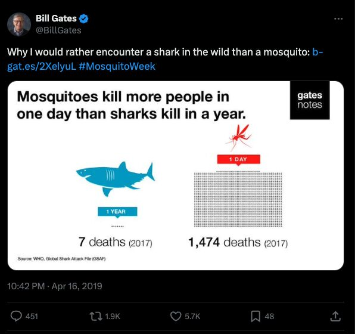
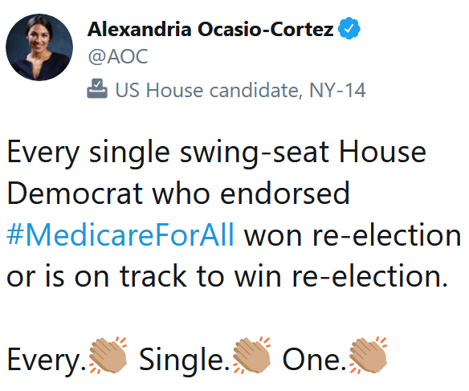
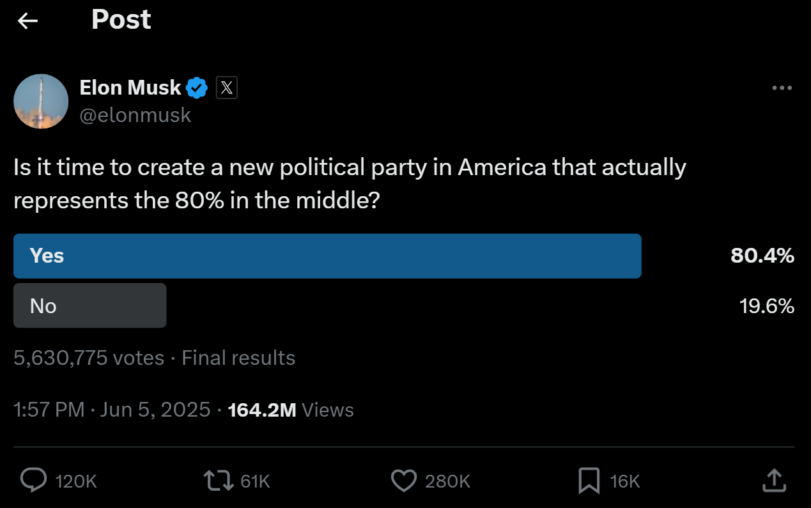

Three Fundamental Problems
- Measurement
- Causal Inference
- Sampling
. . .
In each case, there is some quantity of interest that we do not or cannot observe.
- The goal of statistics is to make inferences about the unobserved quantity based on the things we do observe.
Measurement
. . .
Some underlying concept of interest that we are interested in studying:
Democracy
Ideology
Polarization
Poverty
Happiness
. . .
The goal of measurement is to take features we observe and make inferences about the underlying concept of interest.
Measurement
For each of the following social media posts, try to answer the following questions:
- What is the underlying concept that the author is interested in measuring?
- How is it being measured?
- Is it a good measure?
- How could the measure be improved?
Measurement

Causal Inference
Political scientists are rarely satisfied with just describing the world. We also want to explain why things are the way they are.
This takes the form of causal claims. “X causes Y”.
“Democracy causes economic growth”
“Cable news causes political polarization”
. . .
The fundamental problem of causal inference is that we can’t observe counterfactuals.
Causal Inference
For each of the following social media posts, try to answer the following questions:
- What is the causal claim being made?
- Why is the evidence presented insufficient to support that causal claim?
- If you had unlimited time and unlimited resources, what experiment would you run to test the causal claim?
Causal Inference
Causal Inference

Causal Inference
Sampling
It is rare that we observe the entire population that we are interested in studying.
Instead, we make inferences about the population of interest based on what we observe in a smaller (often much smaller) sample.
Sampling
For each of the following social media posts, try to answer the following questions:
- What is the population of interest?
- Is this sample likely to be representative of the population of interest? Why or why not?
- How might you go about collecting a better sample?
Sampling
